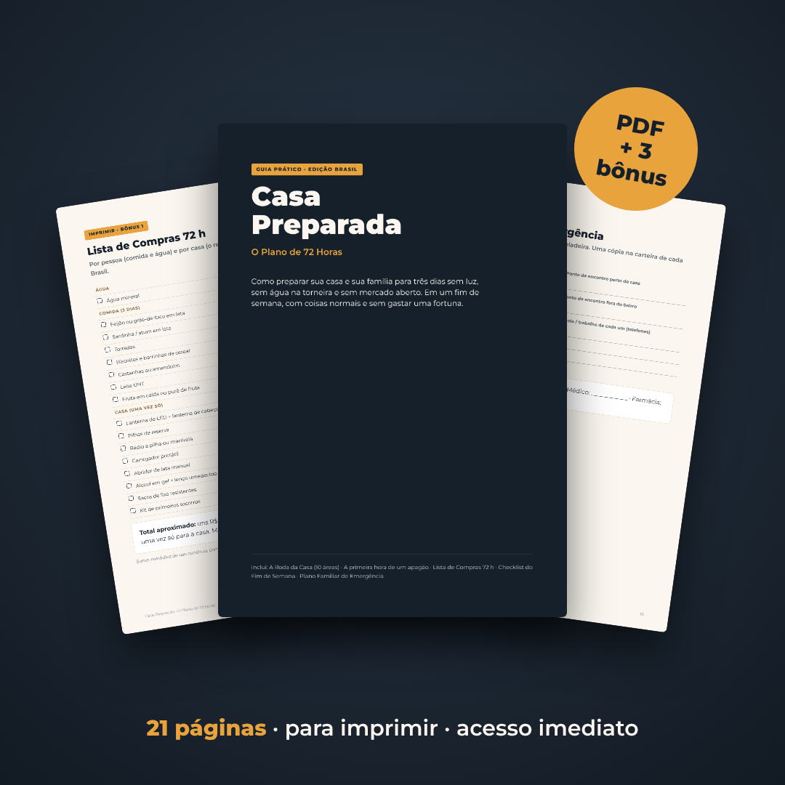

O plano claro, passo a passo, para sua casa e sua família ficarem preparadas para 72 horas sem luz, sem água na torneira e sem mercado. Em um fim de semana, com coisas normais e sem gastar uma fortuna.

QUERO PREPARAR MINHA CASAPDF · acesso imediato · R$ 27Em novembro de 2023 e de novo em outubro de 2024, temporais deixaram mais de 2 milhões de imóveis sem energia na Grande São Paulo. Muitas famílias ficaram vários dias sem luz. Em 2020, o Amapá passou cerca de três semanas com apagão e rodízio. Em 2024, as enchentes no Rio Grande do Sul deixaram cidades inteiras sem luz e sem água.
Por isso a recomendação de preparação no mundo todo é a mesma: cada casa deve conseguir se virar sozinha por pelo menos 72 horas. Não é alarmismo: é a mesma lógica de ter um extintor em casa.
O problema é que ninguém explica como. E o que aparece na internet são listas de "sobrevivência" pra quem vai pro mato, ou baldes de comida caríssimos.
Em quase todas as emergências, a não ser incêndio, alagamento dentro de casa ou ordem da Defesa Civil, sua casa é o lugar mais seguro. O Casa Preparada ensina a fazer ela funcionar três dias sozinha, organizando tudo em dez áreas. Se as dez estão cobertas, você está preparado.
Cada área tem uma página com o que ter em casa, o que fazer na hora e os erros mais comuns. Sem complicação, pensado para apartamento e casa de verdade.
Você tem 7 dias para ler o guia e preparar sua casa. Se não achar útil, é só escrever e devolvemos os R$ 27. Sem perguntas.
100% digital. Você recebe um PDF no seu e-mail em poucos minutos. Dá para ler no celular, no computador ou imprimir (recomendamos imprimir as listas e o Plano Familiar).
Não. Tudo foi pensado com produtos normais de mercado e loja de utilidades. A Lista de Compras traz preços aproximados para você saber quanto gastar.
Serve. Tem uma parte só para apartamento: onde guardar a água e a despensa, elevador, e o que fazer quando a caixa d'água do prédio esvazia.
Não. É para famílias normais que querem ficar tranquilas. Nada de bunker ou sobrevivência no mato: é sobre sua casa funcionar três dias.
Umas 4 horas divididas num fim de semana, seguindo o Checklist do Fim de Semana.